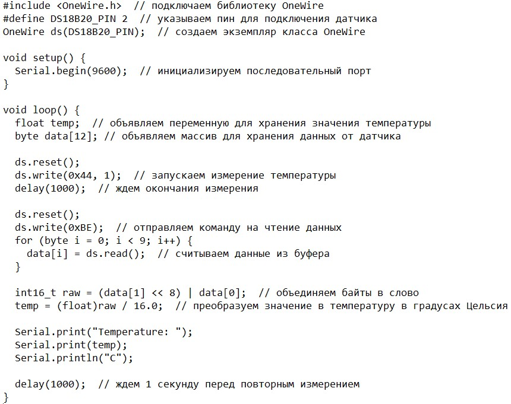
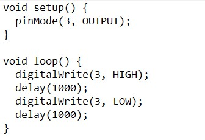

На ардуино с микроконтроллером STM32 можно делать множество проектов, такие как:
1. Разработка устройств управления свотодиодами, дисплеями, кнопками, датчиками и т.д.
- Устройство управления светодиодами.
Для этого проекта потребуются светодиоды, резисторы, плата ардуино и кабели для подключения. С использованием программирования на языке Arduino можно настроить плата для управления светодиодами в зависимости от предварительно заданных параметров и степеней яркости.
- Устройство управления дисплеями.Для этого проекта необходимы дисплеи и плата ардуино. При помощи программирования на языке Arduino можно настроить дисплей для отображения информации в виде текстов, чисел и другой инфографики.
- Устройство управления кнопками.Для этого проекта потребуются кнопки, плата ардуино и кабели для подключения. Используя программирование на языке Arduino, можно настроить плату для распознавания нажатия кнопок и выполнения заданных задач.
- Устройство управления датчиками.Для этого проекта подходят различные типы датчиков, например датчики температуры, влажности, звука и т.д. С использованием программирования на языке Arduino можно создать плату для считывания информации с датчиков и обработки полученных данных. Например, можно создать устройство для измерения температуры и влажности вокруг нас.
Таким образом, ардуино с микроконтроллером STM32 позволяет создавать разнообразные устройства для управления светодиодами, дисплеями, кнопками, датчиками и другими компонентами. Важно ознакомиться с документацией и материалами для получения максимального функционала устройства.
2. Создание датчиков влажности, температуры, давления и других параметров окружающей среды.
Для создания датчиков влажности, температуры, давления и других параметров окружающей среды с помощью Arduino необходимо выполнить следующие шаги:
- Подключить датчик к Arduino. Для этого нужно подключить датчик к пинам Arduino и определить тип датчика в коде программы.
- Написать код для чтения показаний датчика. В зависимости от типа датчика, для чтения показаний используются разные методы. Например, для чтения значения температуры можно использовать методы библиотеки OneWire или DHT.
- Обработать показания датчика. Полученные значения могут быть преобразованы в другие системы измерения или использованы для расчетов или вывода на экран.
- Запрограммировать Arduino на отправку данных на сервер или другое устройство для дальнейшей обработки или мониторинга.
Пример кода для чтения температуры с датчика DS18B20:

Этот код позволит получать данные с датчика температуры и выводить их на последовательный порт в градусах Цельсия. В дальнейшем можно добавить код для отправки этих данных на сервер или другое устройство.
3. Разработка устройств для управления роботами, дронами и другими автономными системами.
- Выбор необходимых компонентов. Для управления роботами, дронами и другими автономными системами с помощью Arduino необходимо выбрать подходящие компоненты, такие как моторы, электронные скоростные контроллеры (ESC), датчики, компасы, гироскопы и т.д.
- Проектирование конструкции устройства. Необходимо разработать конструкцию устройства, выбрав оптимальное соотношение размеров, веса и мощности.
- Написание кода для управления устройством. В зависимости от задания и используемых компонентов, нужно написать код для управления устройством. В частности, нужно определить пины, на которых подключены компоненты, а также настроить алгоритмы для управления моторами или ESC.
- Тестирование устройства. Необходимо провести тестирование устройства для проверки его работоспособности и корректности работы.
Пример кода для управления мотором с помощью Arduino приведен ниже:

Этот код позволит подключить мотор к пину 3 и управлять его вращением с периодом 1 секунда. Подобным образом можно написать код управления ESC и другими компонентами.
4. Создание умных домов и систем управления интеллектуальными устройствами.
Создание умных домов и систем управления интеллектуальными устройствами самы различными способами может быть реализовано на платформе Arduino, с использованием специальных модулей и сенсоров. Некоторые примеры проектов, реализуемых на Arduino в этой области:
- Управление освещением в умном доме: для этого проекта можно использовать датчики освещенности и движения для автоматического включения и выключения света. Эти сенсоры подключаются к плате Arduino, а затем можно написать соответствующую программу, чтобы управлять работой лампочек.
- Автоматизация домашнего климата: для этого проекта можно использовать датчики температуры и влажности внутри помещения и на улице, и подключить их к плате Arduino. С использованием этой информации и программируемого термостата можно автоматически регулировать температуру и влажность в доме.
- Управление бытовой техникой: для этого проекта можно использовать модули реле, которые позволяют управлять работой различных бытовых приборов, таких как кондиционеры, холодильники, пылесосы и т.д. С помощью датчиков и датчиков движения можно настроить автоматический режим работы устройств.
- Умный домашний контроль доступа: для данного проекта можно использовать модули сканера отпечатков пальцев, датчики движения и устройства замков безопасности. С помощью программирования на языке Arduino можно разработать систему контроля доступа, которая управляет работой замков и регистрирует даты и времени входа и выхода пользователей.
- Управление умными насосами для полива растений: для данного проекта можно использовать датчики влажности почвы и контроллеры насосов. С помощью программирования на языке Arduino можно определить, когда у растений не хватает воды и выставить соответствующие параметры для автоматического полива растений.
В целом, возможности с использованием Arduino при создании умных домов и систем управления интеллектуальными устройствами огромны. Вам потребуется хорошее знание языка программирования и компонентов, а также умение проводить электрические работы.
5. Проектирование систем безопасности и мониоторинга окружающей среды.
Проектирование система безопасности и мониторинга окружающей среды может быть реализовано с помощью Arduino и различных датчиков и модулей.
Некоторые примеры проектов, реализуемых на Arduino в этой области:
- Мониторинг качества воздуха: для данного проекта можно использовать датчики (например, датчики CO2, NO2, VOC, температуры и влажности) и плату Arduino для получения информации об уровнях загрязнения воздуха. С помощью дисплея и программирования вы можете построить устройство, которое контролирует качество воздуха и информирует вас о его изменениях.
- Умный дымовой известитель: для данного проекта можно использовать датчики дыма и модули реле, чтобы подключить систему к главному сигнализатору пожара. Если датчик дыма обнаруживает дым, система будет активировать реле и отправить сигнал на главный сигнализатор пожара.
- Управление умными датчиками движения: для данного проекта можно использовать модули датчиков движения и плату Arduino, чтобы создать умную систему безопасности. Когда датчики движения ощущают движение, программа на плате Arduino срабатывает, и система высылает пользователю уведомление о движении.
- Умный дверной замок: для данного проекта можно использовать модули RFID или NFC, датчики двери и реле. Когда датчик двери обнаруживает, что дверь открыта, программа на плате Arduino запрашивает данные с модуля RFID или NFC. Если данные совпадают с желаемым, реле открывает дверь.
- Умный датчик газа: для данного проекта можно использовать модули датчика газа, дисплея и платы Arduino. Система будет мониторить уровень газа в помещении и отправлять предупреждение в случае обнаружения опасных уровней.
В целом, возможности с использованием Arduino в проектировании систем безопасности и мониторинга окружающей среды могут быть широкими. Вам потребуется хорошее знание языка программирования и компонентов, а также умение проводить электрические работы и настраивать программное обеспечение. Важно также помнить, что любой проект, связанный с безопасностью и обеспечением здоровья, требует серьезного и тщательного подхода в проектировании и эксплуатации.
Который можно реализовать на Arduino с микроконтроллером STM32 - это умный домашний термостат.
Для реализации этого проекта понадобиться:
- Плата ардуино с микроконтроллером STM32
- Дисплей OLED
- Датчик температуры и влажности DHT22
- Реле для управления тепловым насосом или котлом
- Интерфейс для подключения к Wi-Fi
- Корпус для устройства
Идея проекта заключается в создании устройства, которое автоматически регулирует температуру в доме, используя данные о внутренней и внешней температуре. Устройство отображает информацию о температуре и легко управляется пользователем.
Датчик температуры и влажности DHT22 измеряет температуру и влажность внутри помещения, а микроконтроллер обрабатывает эти данные и управляет реле, которое включает или выключает тепловой насос или котел в зависимости от температуры в помещении и на улице.
Дисплей OLED показывает текущую температуру внутри и вне дома, а также статус системы отопления. Интерфейс для подключения к Wi-Fi позволяет пользователям управлять устройством через мобильную или веб-приложение.
Корпус для устройства может быть распечатан на 3D-принтере или куплен готовый.
Таким образом, умный термостат, созданный на ардуино с микроконтроллером STM32, позволит сэкономить энергию и деньги на отопление, а также обеспечит удобное и простое управление системой отопления в доме.